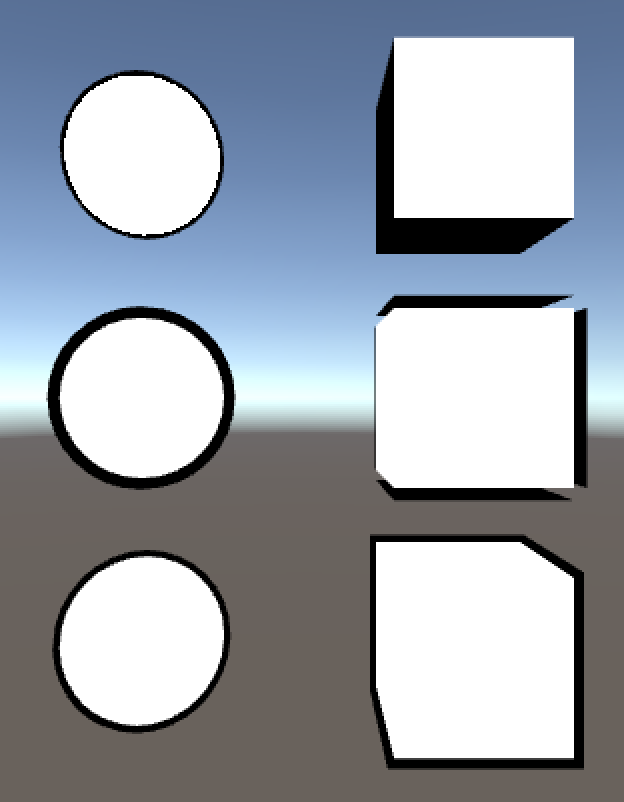

由於 Unity 已經是個可見度最高的遊戲引擎之一，吸引了許多開發者投入遊戲製作的領域，而在程式領域上開發者們可以透過網路獲取到許多範例、文章，除此之外在 Unity 官方中也有很完善的程式、引擎 API 教學。但在 Shader 領域中，卻可以發現雖然在官方文件中可以找到 ShaderLab 的 Syntax 用法，但卻缺少了許多運作流程的講解。
所以希望透過這個議題，讓對 Unity ShaderLab 有興趣的開發者，能夠快速的了解 ShaderLab 的入門知識，而最後也附上了這次所實作的範例，來加深開發者的印象。

Github 連結：ShaderLabBeginner